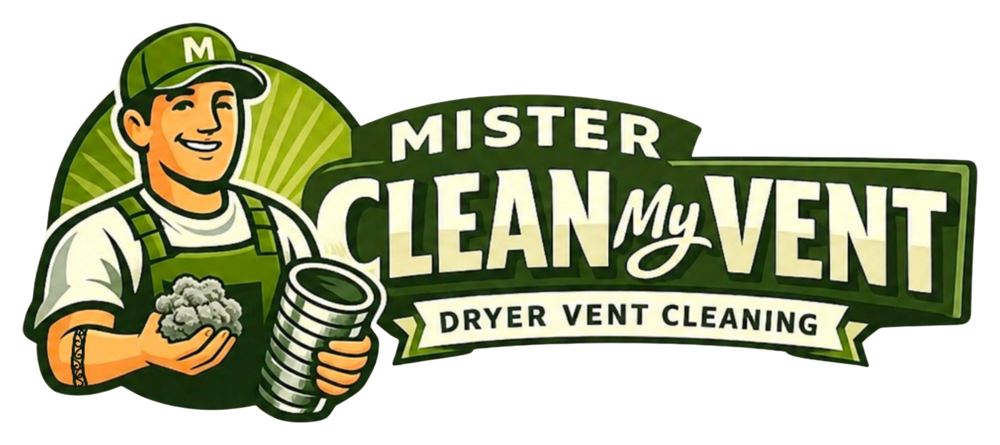
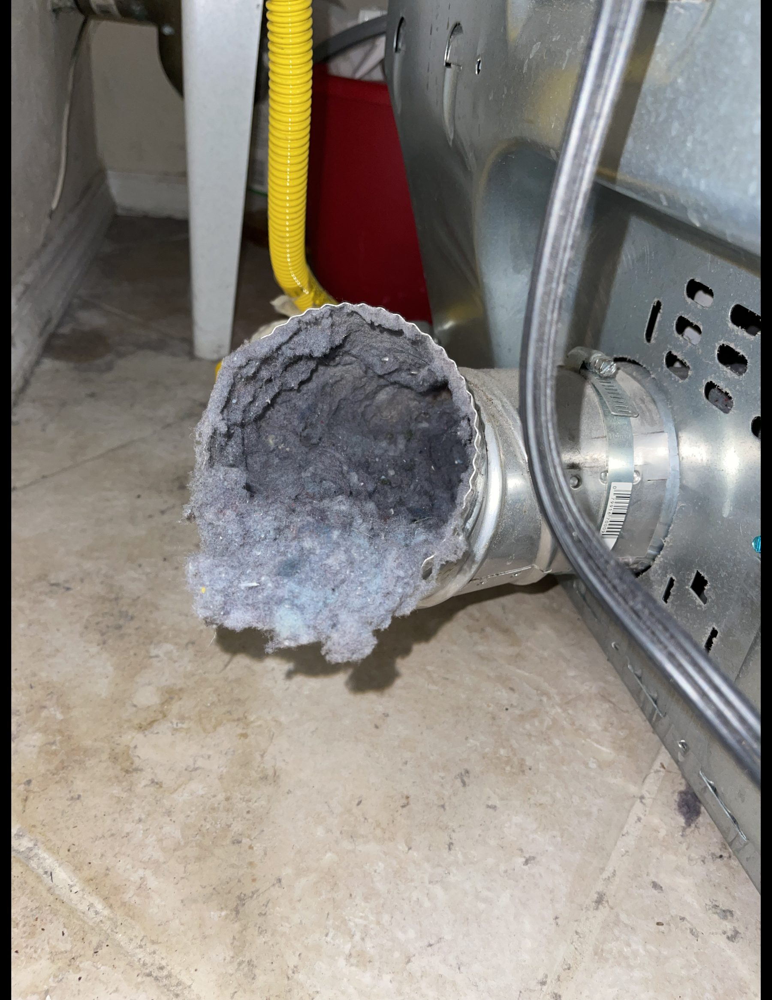

Dryer Vent Cleaning
Complete lint removal from the dryer connection, vent line, and exterior vent termination to help restore proper airflow.

Mister Clean My Vent Book Now
Dryer vent cleaning and airflow checks
Mister Clean My Vent helps homeowners clear lint buildup, reduce fire risk, and keep dryers running the way they should.
What we handle
Built for the exact problem homeowners notice first: clothes taking too long to dry, a dryer that feels hotter than usual, or a vent flap that barely opens outside.
Complete lint removal from the dryer connection, vent line, and exterior vent termination to help restore proper airflow.
Before-and-after airflow checks to help verify improved vent performance.
Inspect transition hose, vent cover, bird intrusion, crushed lines, and airflow restrictions.
Recurring service plans for apartments, condos, rentals, laundry rooms, and small multi-unit properties.
Warning signs
How it works
On arrival, we check what can be safely accessed, including the dryer connection, duct path, and exterior vent for lint, kinks, or restrictions.
Our high-pressure air system uses a reverse-spinning cleaning tool that travels through the vent line, contacting the vent walls to help loosen and remove lint buildup throughout the entire run.
We confirm airflow, clean up the work area, and point out anything worth fixing.
Book service
Send a few details below and Mister Clean My Vent LLC will follow up with scheduling, pricing, and availability. Whether you're dealing with long dry times, lint buildup, or just due for maintenance, we're here to help.
Serving: New Jersey